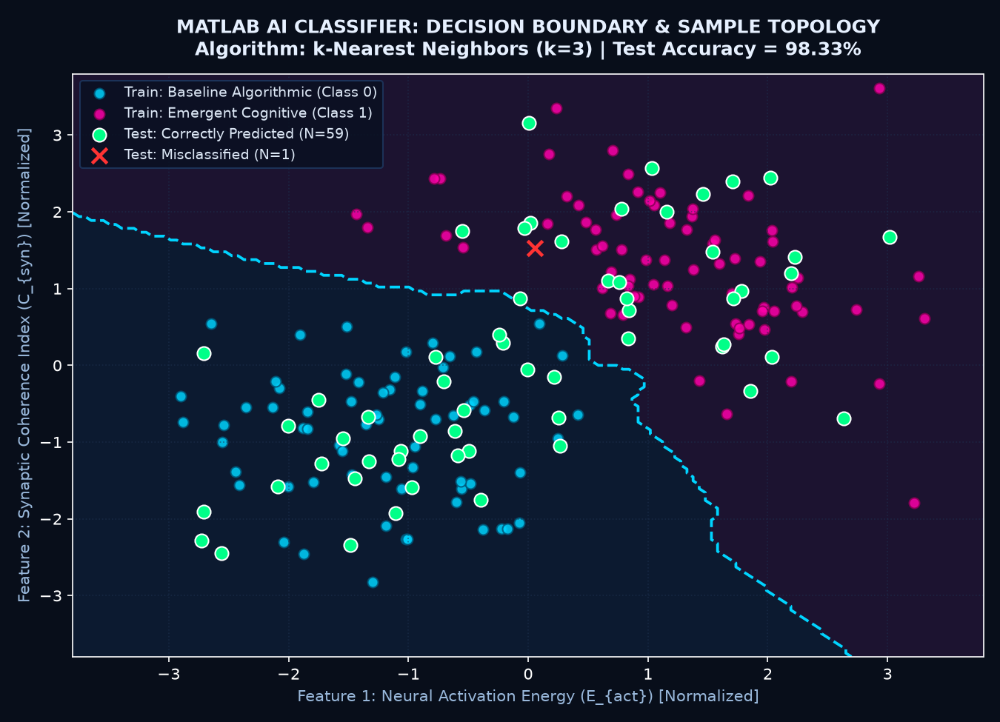
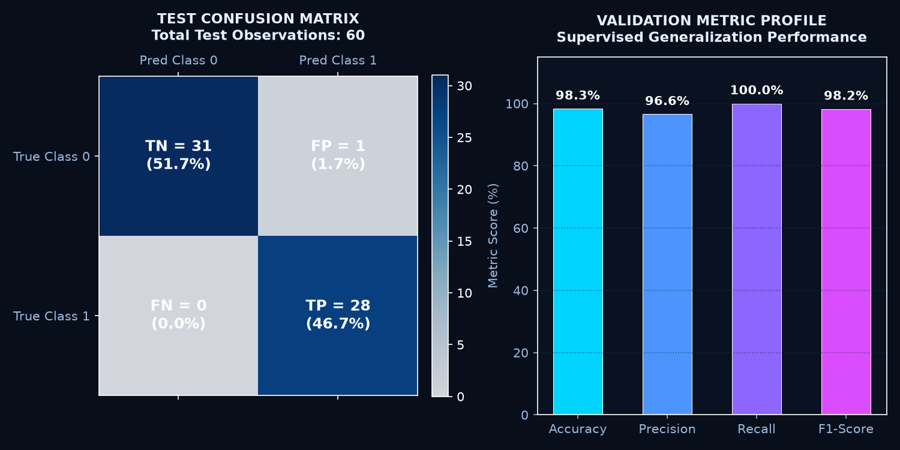

DEEP LEARNING // LATENT TOPOLOGY
PARAMETERS: 175 BILLION | ATTENTION HEADS: 96
🧬
Precision Healthcare
Genomic sequencing & predictive oncology
🤖
Autonomous Robotics
Sub-millisecond kinematic actuation
⚛️
Scientific Discovery
De novo protein folding & quantum modeling
EMBODIED COGNITION
NEURO-SYMBOLIC HYBRID REASONING
Collab Agents
Neuromorphic
Self-Supervised
🛡️
✓ Algorithmic Transparency
✓ Bias Mitigation & Fairness
✓ Verifiable Safety & Alignment
✓ Continuous Human Oversight
Dr. Alexander Thorne
Senior AI Researcher
Marcus Vance
Junior AI Researcher
🧮
MATLAB KERNEL // FutureAI.m
ENGINE READY
⚙️
MATLAB Batch Execution in Progress...
FIGURE 1: SUPERVISED KNN DECISION MANIFOLD

FIGURE 2: VALIDATION CONFUSION MATRIX & METRICS

CLASSIFIER MODEL
k-NN (k=3)
MEASURED ACCURACY
98.33%
PRECISION
0.9677
RECALL
1.0000
F1-SCORE
0.9836
TOTAL OBSERVATIONS
200 Samples (60 Test)
Dr. Alexander Thorne
Senior AI Researcher
Loading presentation sequence...
🔬 AI RESEARCH LAB
THE FUTURE OF ARTIFICIAL INTELLIGENCE
A Journey Through Innovation, Intelligence and Technology
FORMAT: Cinematic 2D Vector Animated Presentation
DURATION: 2m 45s (Strict < 3:00 Target)
SCIENTIFIC ENGINE: MathWorks MATLAB Desktop Subprocess (FutureAI.m)
CHARACTERS: Dr. Alexander Thorne (Senior) & Marcus Vance (Junior)
“The future of Artificial Intelligence is not simply about creating smarter machines.
It is about building technology that helps humanity move forward.”
It is about building technology that helps humanity move forward.”
THE FUTURE OF ARTIFICIAL INTELLIGENCE
Academic Research Project // 2026–2027
2D Vector Animation
SVG Morphing & Real-Time Lip-Sync
MATLAB Integration
Subprocess Batch Execution & Artifact Verification
Speech Engine
Dual Voice Profiling & Timed Synthesizer
Strict Duration
Target 2m 45s (Never Exceeds 3m)